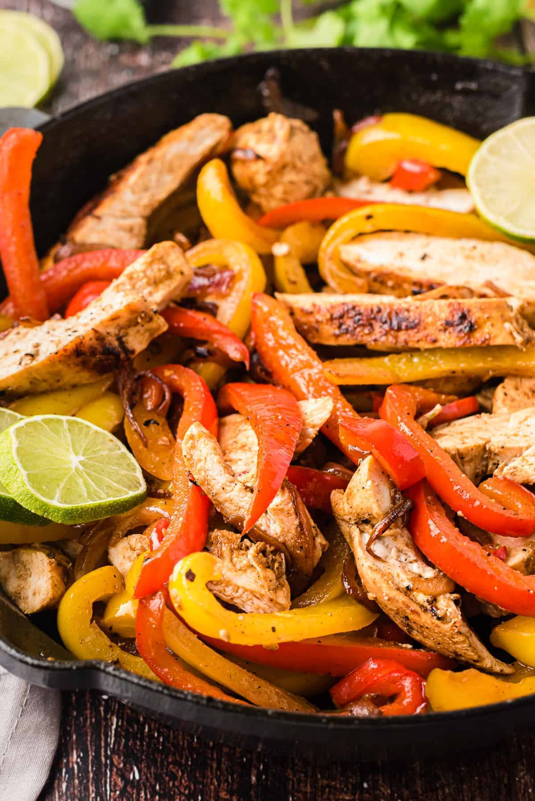

Fire Chicken Fajitas

Description
Mouthwatering grilled chicken fajitas with a little zing. Serve on a bed of mixed lettuces with guacamole, salsa, and sour cream, if desired.
ingredients
-
2 lime (2" dia)s limes, juiced
-
2 tablespoons fajita seasoning
-
1 pound skinless, boneless chicken breast halves
-
2 large yellow bell peppers
-
10 (6 inch) flour tortillas, warmed
Steps
-
Whisk lime juice, olive oil, and fajita seasoning together in a bowl and pour into a resealable plastic bag. Add chicken breasts, coat with the marinade, squeeze out excess air, and seal the bag. Marinate in the refrigerator for 30 minutes.
-
Preheat an outdoor grill for medium heat and lightly oil the grate.
-
Cut bell peppers in half and discard the inner membranes and seeds.
-
Remove chicken from the marinade and shake off excess. Discard the remaining marinade.
-
Place chicken and peppers (cut-sides down) on the preheated grill. Cook, turning occasionally, until chicken is no longer pink in the center and the juices run clear, and peppers have nice grill marks on them, about 15 minutes. An instant-read thermometer inserted into the center should read at least 165 degrees F (74 degrees C.
-
Cut peppers and chicken into strips and serve on tortillas.